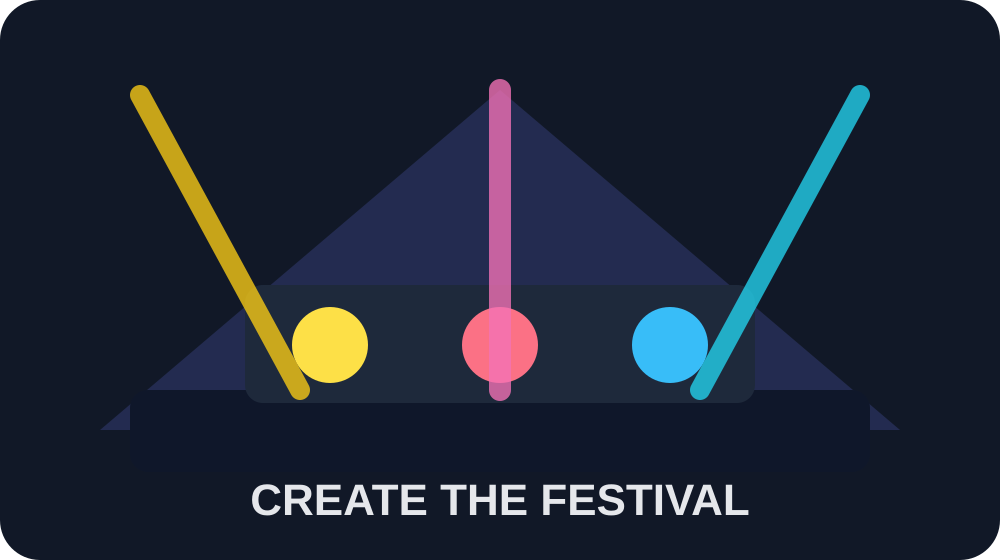

Your challenge
You are part of an events team creating a brand-new music festival. Across the project you will complete one piece of the project and save evidence in your project folder.

Choose your project stage
Plan Your Music Festival
Start your project by creating the identity of your festival. You will choose the festival name, theme, audience, location and basic event details.
ExperienceDevelop the Festival Experience
Improve your festival plan by adding the extra details that make the event feel realistic, safe and exciting for visitors.
Budget StartBudget Part 1: Data Entry and Formatting
Start your festival budget using Excel. You will enter cost and income data, format money values, and make your spreadsheet clear and professional.
Budget FormulaeBudget Part 2: Formulae, Functions and Profit
Continue your Excel budget by using SUM, MIN, MAX, AVERAGE and custom formulae to calculate whether the festival makes a profit or loss.
LogoDesign Your Festival Logo in Canva
Create a festival logo that matches your festival name, music style and target audience. This will become part of your festival brand.
Final LogoImprove and Finalise Your Logo
Use feedback to improve your Canva logo so it looks polished and can be used on your poster, pitch deck and review work.
PosterCreate Your Festival Poster in Canva
Design a promotional poster for your festival. The poster should persuade people to attend and include all important event information.
Final PosterFinalise Your Festival Poster
Improve your Canva poster so it looks professional, readable and suitable for your target audience.
Sponsor PitchCreate a Sponsor Pitch Deck
Create a 6–8 slide PowerPoint presentation to persuade potential sponsors to support your festival.
Planning0Write Your Festival Review
Write a music festival review as if the event has already happened. You are a music critic describing the performances, experience, positives, improvements and final score.
Project overview
| Stage | Task | Tool | What to save |
|---|---|---|---|
| Planning | Plan Your Music Festival | Microsoft Word | Festival_Planning.docx |
| Experience | Develop the Festival Experience | Microsoft Word | Festival_Planning_Improved.docx |
| Budget Start | Budget Part 1: Data Entry and Formatting | Microsoft Excel | Festival_Budget.xlsx |
| Budget Formulae | Budget Part 2: Formulae, Functions and Profit | Microsoft Excel | Festival_Budget_Final.xlsx |
| Logo | Design Your Festival Logo in Canva | Canva | Festival_Logo.png or Festival_Logo.pdf |
| Final Logo | Improve and Finalise Your Logo | Canva | Festival_Logo_Final.png or Festival_Logo_Final.pdf |
| Poster | Create Your Festival Poster in Canva | Canva | Festival_Poster_Draft.png or Festival_Poster_Draft.pdf |
| Final Poster | Finalise Your Festival Poster | Canva | Festival_Poster_Final.png or Festival_Poster_Final.pdf |
| Sponsor Pitch | Create a Sponsor Pitch Deck | Microsoft PowerPoint | Festival_Sponsor_Pitch_Deck.pptx |
| Planning0 | Write Your Festival Review | Microsoft Word | Festival_Review.docx |